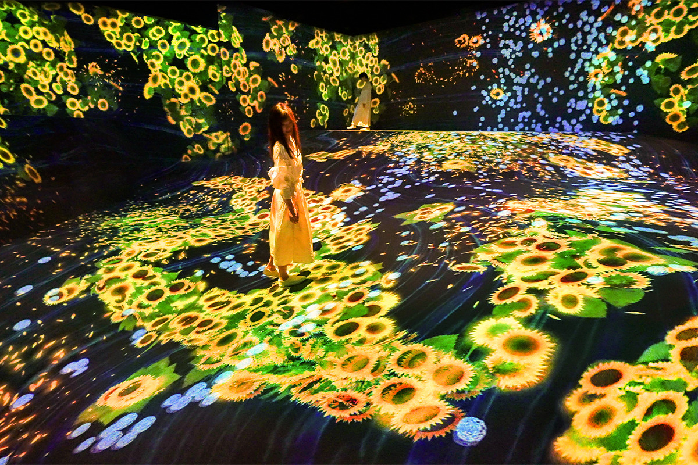
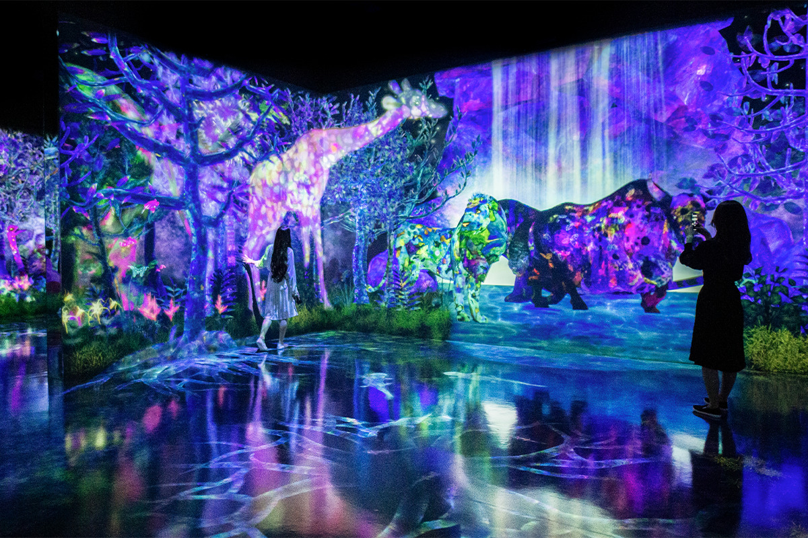
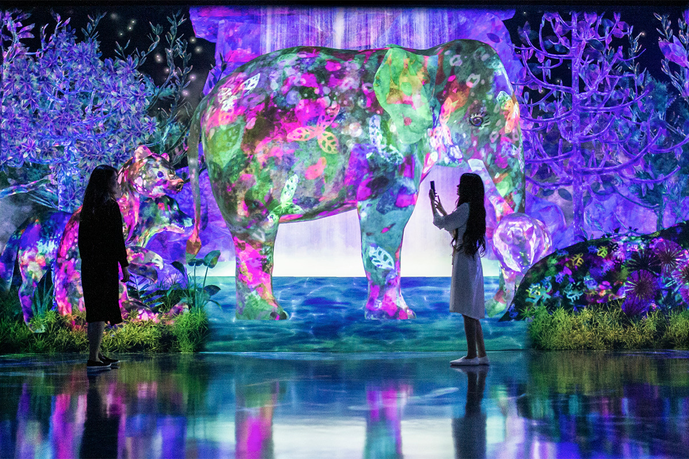
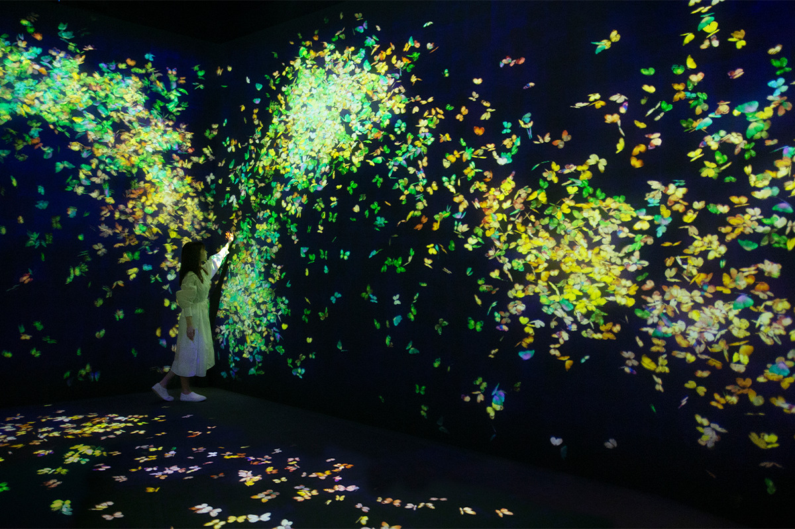
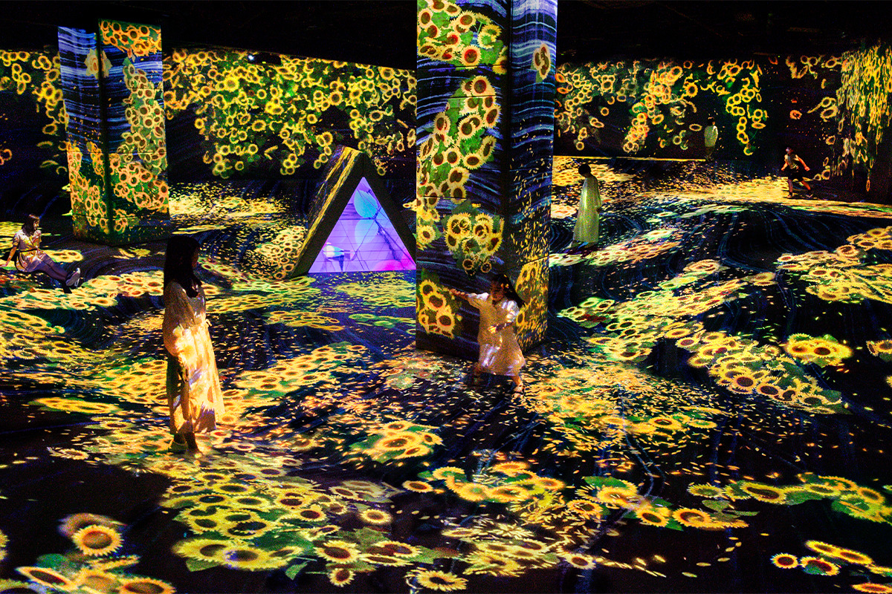
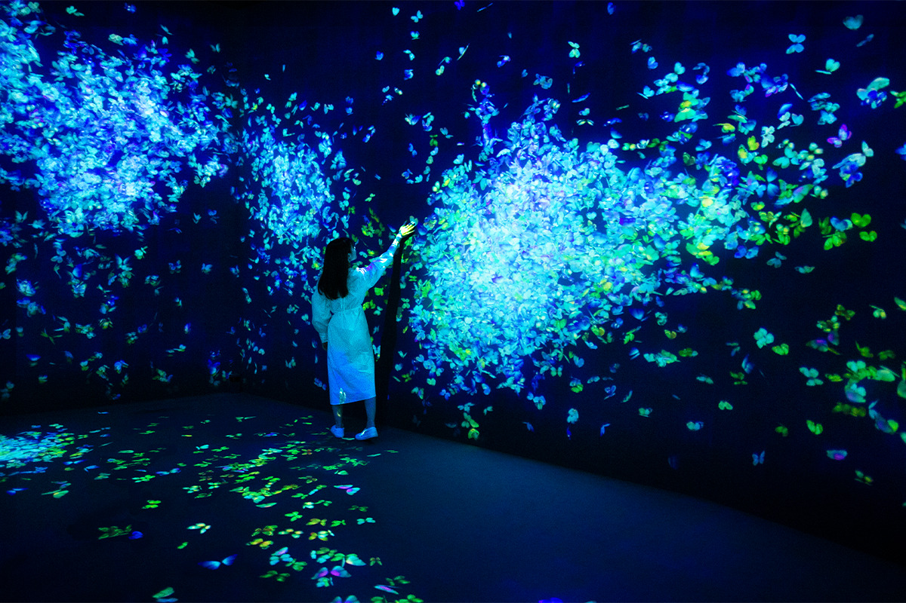
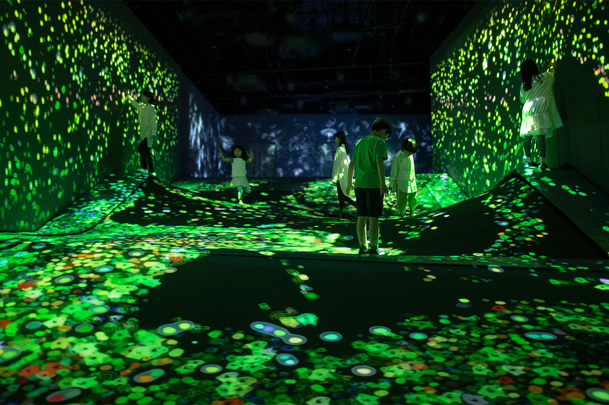
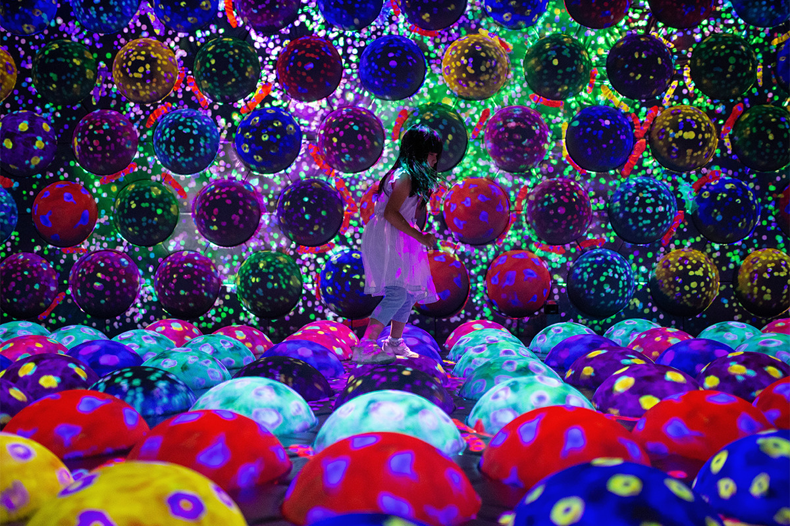

Префектура Фукуока · Фукуока · искусство
teamLab Forest Fukuoka: цифровой лес, где ловят зверей и прыгают по светящимся шарам

В Фукуоке у творческого коллектива teamLab есть постоянный музей teamLab Forest Fukuoka. Это цифровой лес, где посетитель ловит зверей, прыгает по светящимся шарам и меняет картину каждым шагом.
Музей
Два леса teamLab
teamLab это коллектив художников и инженеров, который строит искусство на новейших технологиях. Их музей в Фукуоке состоит из двух частей: «Леса, где ловят и собирают» и «Леса движения».
Первая часть устроена как новое пространство для учёбы. Её идея звучит так: поймать, рассмотреть и отпустить. Посетитель сам ходит по залу, ищет, находит и ловит, а пойманное становится поводом узнать больше. Со смартфоном в руке здесь охотятся на самых разных зверей, рассматривают их и собирают собственный иллюстрированный справочник.

Вторая часть задумана как пространство для творческого движения, где учатся понимать мир телом и думать в объёме. Сложный многоуровневый зал тренирует пространственное мышление: в этот интерактивный мир входишь целиком, всем телом.
Идея
Зачем взрослому снова ловить зверей
В детстве все с увлечением что-нибудь ловили и собирали. У этого есть давняя причина. Историю человечества считают примерно в 6 млн лет, и до появления земледелия и скотоводства 10 000 лет назад люди жили охотой и собирательством. Почти всё это время, 5,99 млн лет из 6 млн, или 99,8%, человек ходил по лесу вместе с другими, ловил животных и собирал растения. Так развивался мозг: люди выживали, потому что исследовали лес, добывали, наблюдали и учились.

Сегодня мир меняется быстро и непредсказуемо, и учиться приходится всю жизнь. Поэтому важнее не привычное «образование», где объясняют и заставляют запоминать, а учёба по собственному интересу. Главное здесь сам интерес, который подталкивает учиться дальше.
teamLab Forest Fukuoka строится именно на этом. Ловить и добывать человеку приятно на уровне инстинкта, и в музее это удовольствие становится искусством, а затем отправной точкой для новых интересов.
Лето 2021
Цветы, лягушки и бабочки
Хотя музей целиком находится под крышей и состоит из цифровых проекций, времена года здесь чувствуются. С 17 июля 2021 года в залах показывали летнюю версию работ: по многоуровневому пространству бродили звери, сложенные из подсолнухов и других летних цветов.

«Существа, живущие среди цветов в шевелящейся долине»
В объёмном мире с перепадами высот живут летние цветы, подсолнухи и гортензии, а среди них лягушки, ящерицы и другие существа. Цветы бесконечно распускаются и увядают и всё время складываются в новых животных.

Существа поедают друг друга и размножаются, а съеденные исчезают: вместе они образуют одну экосистему, где сильный ест слабого. Если человек наступает на цветок, из которого сложено животное, лепестки облетают. Стоит топтать его слишком долго, и животное погибает и пропадает. Работу в реальном времени рисует компьютерная программа, она всё время меняется от движений людей и изображает экосистему, которая никогда не кончается.
«Стая бабочек, хрупкая жизнь»
Пока в зал никто не вошёл, в нём темно и пусто. Когда человек входит и замирает, у его ног и под ладонью, прижатой к стене, рождаются бабочки и разлетаются по залу. Но если коснуться бабочки, она умирает.

В зале летают только те бабочки, которых родили люди. Если погубленных окажется больше, чем рождённых, работа исчезнет.
Движение
Мягкий рельеф и прыгучие шары
«Слои частиц на мягком рельефе»
«Мягкий рельеф» с перепадами высот teamLab разработала сама. Сверху на него сыплются разноцветные частицы, стекают по склонам вниз и, наслаиваясь, рисуют узор, похожий на геологические пласты. Там, где стоит человек, поверхность проседает, и частицы стекаются в эту ямку. Когда человек идёт, они разлетаются и перемешиваются, и рисунок слоёв меняется.

Цвет падающих частиц следует за сутками, утром, днём, вечером и ночью, и за временами года, а палитру берёт у солнца, воды и земли.
«Гусеничный дом из быстро вращающихся прыгучих шаров»
Зал до отказа заполнен «быстро вращающимися прыгучими шарами», которые светятся разными цветами. Светящиеся шары крутятся на большой скорости, но когда подходит человек, останавливаются, и на них удобно наступать.

Чем больше прыгаешь по шарам, тем ярче они светятся. Если наступать на шары одного цвета подряд, шар лопается изнутри и свет разливается по залу. Продолжишь прыгать по тому же цвету, и родится гусеница. А если пройти по одному цвету до самого конца, лопнут все шары этого цвета в зале, и гусеницы поползут отовсюду.
Здесь развивается объёмное мышление: увлекаешься красивой работой, а заодно двигаешься и находишь новые интересы. Мозг тут работает не только у детей, но и у взрослых, так что музей хорошо подходит для поездки всей семьёй. Билет для взрослого в 2021 году стоил 2200 иен, для ребёнка 800 иен.
teamLab Forest Fukuoka
- Адрес
- префектура Фукуока, Фукуока, район Тюо, Дзигёхама, 2-2-6, BOSS E·ZO FUKUOKA, 5-й этаж
- Часы работы
- будни 11:00–20:00, выходные и праздники 10:00–20:00
- Выходные
- см. на сайте BOSS E·ZO FUKUOKA
- Цены / Вход
- взрослые 2200 иен, дети 800 иен
- Сайт
- e-zofukuoka.com